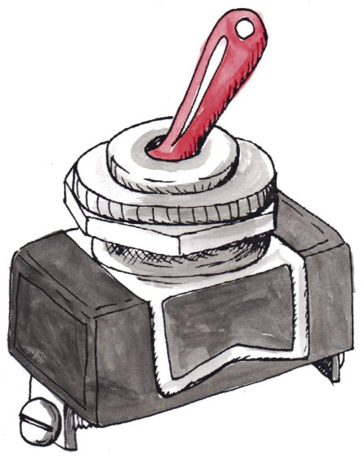

Eenvoudige elektriese stroombane
In hierdie hoofstuk gaan jy leer wat ’n elektriese stroombaan is en hoe om al die dele van ’n elektriese stroombaan te verbind. Jy gaan ook leer hoe om stroombaan diagramme te teken. Jy gaan leer hoe elektromagnete werk en hoe om ’n eenvoudige elektromagneet te maak.

Figuur 1: ’n Gloeilamp kan deel van ’n elektriese stroombaan wees. Die filament in die gloeilamp vorm deel van die stroombaan.
Figuur 2
Stroombane en komponente
’n Elektriese stroombaan het drie basiese dinge nodig om te werk:
1. ’n Volledige stroombaan. Daar moet ’n ongebroke verbinding van geleidende materiaal wees waardeur die elektriese stroom kan vloei.
2. ’n Lading. Daar moet ’n mate van weerstand in die stroombaan wees. Dit kan in die vorm van ’n gloeilamp, resistor, ’n motor of ander elektriese komponente wees.
3. ’n Volledige stroombaan. Daar moet ’n ongebroke verbinding van geleidende materiaal wees waardeur die elektriese stroom kan vloei.
Om te wys hoe ’n elektriese stroombaan verbind moet wees, teken ons stroombaan diagramme met simbole wat elke komponent wys. Dit is ’n eenvoudige manier om die elektriese stroombaan voor te stel. Die tabel wys die simbool wat ons gebruik vir elke komponent:
’n Komponent is een deel van ’n hele sisteem.
|
Naam |
Prent |
Simbool |
|
elektrochemiese sel of sel |
|
|
|
batterye in series, beteken dat hulle langs mekaar is |
|
|
|
skakelaar |
 |
|
|
gloeilamp |
|
|
|
resistor |
|
|
|
gonser |
|
|
|
geleidingsdrade |
|
|


Die volgende is ’n voorbeeld van ’n eenvoudige elektriese stroombaan. Die stroombaan bestaan uit ’n sel, ’n skakelaar, en ’n gloeilamp wat aanmekaar verbind is deur ’n geïsoleerde koper geleidingsdraad.
Stroombaan diagramme word as reghoekige bokse geteken, al lyk die ware stroombaan heel anders.

Figuur 3
Vrae om te beantwoord
1. Wat is die drie dinge wat jy nodig het om ’n elektriese stroombaan te maak?
2. Hoe dink jy sal jy kan sien of die stroombaan wat in die prent hierbo gewys is, werk?
3. Indien jy ’n fout maak wanneer jy die stroombaan aanmekaar sit en die konneksies is nie volledig nie, wat dink jy sou gebeur?
Bou jou eie elektriese stroombaan
Bou eenvoudige stroombane
Vir hierdie praktiese oefening het jy die volgende voorwerpe nodig:
- verskeie 1,5 V selle of een 9 V sel,
- geïsoleerde koper draad,
- ’n skakelaar, en
- ’n gloeilamp.
1. Verdeel in groepe van drie of vier.

Figuur 4
2. Verbind die komponente soos aangedui in die diagram in figuur 4.
(a) Gaan die gloeilamp aan?
(b) Hoekom gaan die gloeilamp nie aan nie?
3. Kyk nou na hierdie stroombaan:

Figuur 5
(a) Gaan die gloeilamp aan?
(b) Hoekom gaan die gloeilamp aan?
4. Teken jou stroombaan diagram om te wys hoe jy jou komponente aanmekaar verbind het in jou stroombaan. Onthou om ’n liniaal te gebruik.

5. Watter een van jou komponente is die energiebron?
6. Watter een van jou komponente is die lading?
Elektromagnete
Ons gaan nou na ’n baie interessante verskynsel kyk, naamlik die verhouding tussen elektrisiteit en magnetisme.
Elektromagnete is magnete wat geskep word deur die gebruik van elektrisiteit. Hulle is nie permanente magnete nie. Hulle is slegs magnete wanneer elektrisiteit deur hulle vloei. Sodra die elektrisiteit afgeskakel word, verloor die elektromagneet sy magnetisme.
Elektromagnete is baie bruikbaar vir die skeiding van afvalmateriaal. Afvalmateriaal in afvalhope is gewoonlik ’n mengsel van metale en nie-metale. Die ysterhoudende metale, metale wat yster bevat, is steeds waardevol. Dit neem ’n lang tyd om afvalmateriaal met die hand te sorteer.
Soos wat jy verlede week geleer het, word ysterhoudende metale aangetrek tot magnete. ’n Elektromagneet word deur die afvalmateriaal getrek en al die ysterhoudende metale plak daaraan vas. Die elektromagneet word dan oor ’n afvalbak beweeg waar die elektromagneet afgeskakel word. Die ysterhoudende metale is dan nie meer aangetrek tot die magneet nie en val in die afvalbak in.
Figuur 6: ’n Elektromagneet word gebruik om metale in ’n skrootwerf te sorteer.
Elektromagnete word nie alleenlik gebruik om afvalmetaal te sorteer nie, maar word gereeld gebruik as komponente van ander elektriese toestelle. Sommige voorbeelde sluit in:
- in motors: om die motor te laat roteer,
- in luidsprekers: ’n elektromagneet reageer op die klankseine en versterk die klank,
- in rekenaar hardeskywe: elektromagnetisme word gebruik om data te skryf en te stoor,
- in elektriese klokke: elektromagnete trek die hamer van die klok aan en laat dit weer los, en
- in ’n magnetiese deurskakelaar: elektromagnete word ook gebruik in toestelle wat deure oop en toe laat gaan.
In al hierdie toestelle word die magnetiese krag beheer deur die aan- en af skakel van die elektriese stroombaan, en hierdie is die eienskap wat elektromagnete so bruikbaar maak.
Laat ons nou kyk na ’n eenvoudige elektromagneet in die klaskamer. Jou onderwyser kan hierdie eksperiment as ’n demonstrasie doen.
Maak ’n eenvoudige elektromagneet
Vir hierdie aktiwiteit gaan jy die volgende voorwerpe benodig:
- ’n Lang ysterspyker, omtrent 15cm lank. Indien jy nie ’n lang spyker het nie, kan jy ’n bondel maak van ’n aantal stukke ysterdraad,
- 3 m geïsoleerde koperdraad,
- ’n D-sel sel,
- ’n draadstroper, en
- metaal skuifspelde.
1. Gebruik die draadstroper om die klein stukkie isolasie van beide kante van die geïsoleerde koperdraad af te haal.
2. Draai die geïsoleerde draad netjies om die ysterspyker. Maak seker dat jy die draad in dieselfde rigting bly draai. Hou die spirale na aan mekaar.

Figuur 7: ’n Eenvoudige elektromagneet
3. Draai nou een van die gestroopte punte van die draad om die positiewe pool van die sel.
4. Draai die ander gestroopte punt om die negatiewe pool van die sel.
5. Om te toets of jou elektromagneet werk, kyk of dit die skuifspelde optel. Indien die skuifspelde vasplak aan die ysterstaaf, dan beteken dit dat jou elektromagneet werk!
Veiligheid:
Die ysterspyker kan redelik warm word, so wees versigtig om nie jou hande te brand nie!
6. Sodra jy die elektromagneet getoets het, haal een van die drade van een van die pole van die sel af. Probeer nou om die skuifspelde op te tel. Word die skuifspelde aangetrek tot die ysterstaaf?
7. Hoe kan jy die elektromagneet gebruik om die skuifspelde van een punt op te tel en dan op ’n ander plek neer te sit?
Hoe werk ’n elektromagneet?
Daar is ’n sterk verhouding tussen elektrisiteit en magnetisme. Die elektrisiteit in die draadspirale skep ’n magnetiese veld. Die ysterspyker is reg in die middel van hierdie magnetiese veld. Omdat die ysterspyker ’n ysterhoudende materiaal is, word dit deur die veld gemagnetiseer. Die magnetiese veld van die elektriese stroombaan word groter of sterker gemaak deur die magnetiese veld in die ysterspyker. Sonder die ysterkern sal die magnetiese veld baie swak wees. Wanneer die elektriese stroom afgeskakel word, verloor die ysterspyker sy magnetisme.
Volgende week
Volgende week gaan jy meganiese sisteme en raamstrukture hersien as voorbereiding vir volgende kwartaal se mini-PAT.